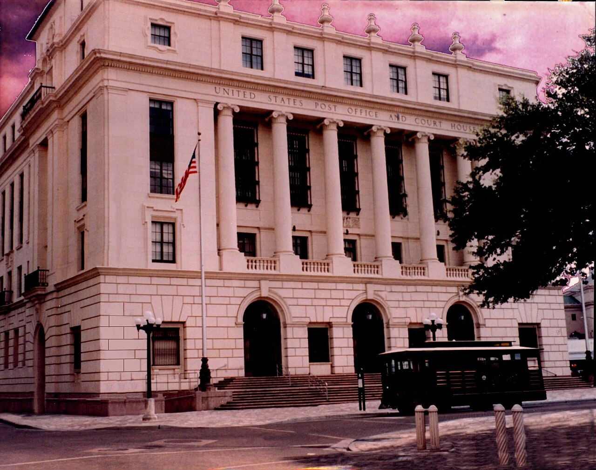

How asylum and the immigration court work in the United States
Asylum is a form of protection for people who fear persecution and are already in the United States or at its border. This reference explains the legal basis of asylum, who may apply, the one-year deadline and Form I-589, the two pathways (affirmative through USCIS and defensive in immigration court), the EOIR and BIA structure, work authorization, and the path to a green card and citizenship — strictly on the basis of official sources. This is general information, not legal advice.

Asylum is a form of protection that may be granted to people who are in the United States or at its border and have a well-founded fear of persecution if they return to their home country. Its legal basis is Section 208 of the Immigration and Nationality Act (INA) (8 U.S.C. §1158). This reference explains the general process strictly on the basis of official sources — U.S. Citizenship and Immigration Services (USCIS), the Department of Justice's Executive Office for Immigration Review (EOIR), and reputable legal organizations. It is not legal advice; every case is unique, and the law and practice change from time to time.
What asylum is and who may apply
To obtain asylum, the applicant must show that they have been persecuted, or have a well-founded fear of persecution, in their home country on one of five grounds — race, religion, nationality, membership in a particular social group, or political opinion. Asylum differs from refugee status: refugee status is sought from abroad, while asylum is sought when a person is inside the United States or at its border. Once asylum is granted, the person becomes an "asylee."
The one-year deadline and Form I-589
As a rule, the asylum application — Form I-589 (Application for Asylum and for Withholding of Removal) — must be filed within one year of arrival in the United States. Exceptions to this deadline may apply if there are changed or extraordinary circumstances. There is no government filing fee for Form I-589. An applicant may include a spouse and unmarried children under 21 who are in the United States as derivatives on the application.
Two pathways: affirmative and defensive
Asylum is sought in two ways. The first is the affirmative process: a person not in removal proceedings files Form I-589 with a USCIS asylum office and attends an interview with an asylum officer. The second is the defensive process: a person already in removal (deportation) proceedings requests asylum as a defense before an immigration judge. People detained at the border or in expedited removal are first given a "credible fear" interview; if it is positive, the case is referred to immigration court.
The immigration court (EOIR) and appeals
U.S. immigration courts are not part of the independent judiciary but fall under EOIR (the Executive Office for Immigration Review) within the Department of Justice; an immigration judge hears the case. A judge's decision can be appealed to the Board of Immigration Appeals (BIA); after that, a case may proceed to the federal circuit courts of appeals. According to TRAC (Syracuse University), the backlog of pending immigration-court cases has exceeded 3 million in recent years, causing cases to wait for years.
Work authorization (EAD)
An asylum applicant is not immediately allowed to work. As a rule, they may apply for an Employment Authorization Document (EAD) once their application has been pending for 150 days, and the permit is issued after the application has been pending at least 180 days. Once asylum is granted, an asylee has the right to work without any additional permit.
After asylum: green card and citizenship
A person granted asylum becomes eligible to apply for permanent residence — a green card (Form I-485) — one year later. After obtaining a green card, a person may generally apply for U.S. citizenship through naturalization after five years. A spouse and children included on the asylee's application may also use the corresponding status and path.
How it differs from other protections
Asylum differs from withholding of removal and protection under the Convention Against Torture (CAT): these two generally require a higher standard of proof and do not lead directly to a green card, but they stop a person from being returned to a specific country. Refugee status, by contrast, is sought abroad, before the person arrives in the United States.
Note
This text is general information and does not replace legal advice. Asylum laws and deadlines change, and every case is unique. For formal advice it is recommended to consult a licensed immigration attorney or a representative accredited by the Department of Justice (a BIA-accredited representative). Beware of "notarios" or unlicensed advisers — they are not attorneys.
Sources
- USCIS — Asylum (boshpana ta'rifi, I-589, affirmativ jarayon, grin-karta yo'li)
- USCIS — Obtaining Asylum in the United States (affirmativ va himoyaviy yo'llar)
- DOJ EOIR — Executive Office for Immigration Review (immigratsiya sudlari, BIA)
- American Immigration Council — Asylum in the United States (muddat, EAD, jarayon)
- TRAC Immigration, Syracuse University — Immigration Court backlog